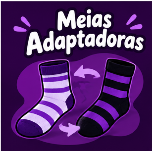
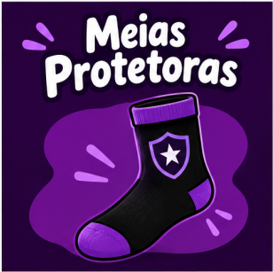
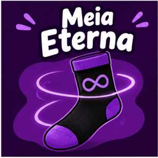
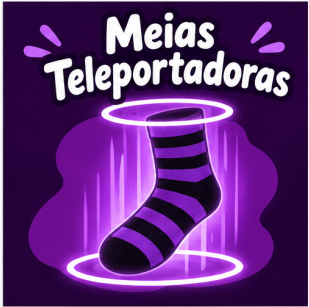
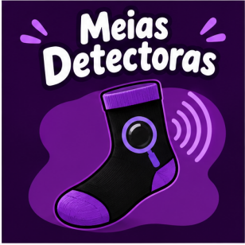

O que nossas meias podem oferecer?
Muitas vezes as pessoas acabam sofrendo com meias desconfortáveis, e principalmente, com meias que sumiram misteriosamente. A solução da Meias Fantasmas é justamente trazer mais conforto e uma praticidade, vender apenas meias separadas que possam repor o pé de um dos pares que foi perdido, e fazendo isso com maestria!
Nossa empresa trouxe ideias e tecnologias inovadoras, tanto para conforto quanto para que nossos clientes nunca mais tenham que comprar meias novas porque elas simplesmente desapareceram!
Aqui vão alguns dos nossos produtos!





| Produto | Sobre | Preço | ||
|---|---|---|---|---|
| Meias Adaptadoras | Se transformam no par correspondente ao serem colocadas lado a lado | R$28,00 | ||
| Meias enganadoras | Camuflam meias feias e que podem fazer você ser zoado | R$34,00 | ||
| Meias protetoras | Atacam quem estiver fazendo bullying com você (saem voando e atacam) | R$47,00 | ||
| Meia eterna | Uma meia que nunca vai sair do seu pé, porém, quanto mais tempo passado, mais ela fica confortável no pé e deixa o tênis do formato ideal no pé | R$60,00 | ||
| Meias Teleportadoras | Quando você perde uma meia, ela teleporta até você. É perfeita para resolver o problema clássico da meia que desaparece misteriosamente. | R$39,00 | ||
| Meias Detectoras | Possuem um detector de meias perdidas. Quando encontram uma meia sem par, começam a piscar e apontam para onde ela está. | R$45,00 | ||
| Preços sujeitos a alteração | ||||